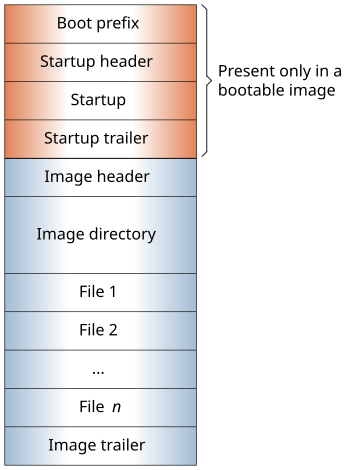

Build an OS image filesystem (QNX)
mkifs [-?] [-a suffix] [-l inputline] [-n[n]] [-o directory]
[-p patchfile] [-r rootdir] [-s section] [-v]
[buildfile] [directory] [outputfile]
Linux, Microsoft Windows
el) Process inputline before interpretation of the buildfile begins. Input lines given to mkifs must be quoted to prevent interpretation by the shell (especially since mkifs input lines often contain spaces). Multiple -l options are processed in the order specified. No default.
When mkifs adds files to an IFS image, it uses the timestamp information from the file on the host machine. If mkifs is creating an inline file (which doesn't exist on the host machine), it has to generate its own timestamp information. By default, it's the time that the image is generated.
This results in different checksum values for two identical builds (because the file's creation and modification times are different). If you use -n, the checksum value is the same on all identical builds.The -nn option addresses a quirk in NTFS relating to daylight savings time. This option forces the modification time for all files in the IFS image to be set to 0. This ensures that subsequent builds of the same IFS image have the same checksum.
oh) Specify a directory to be used for all permanent build artifacts, other than the output image itself. The most common example is the .sym files generated by the [+keeplinked] attribute.
Patch files,below).
You can define multiple -r options; each adds a set of paths to search for files. The -r options are evaluated from left to right, meaning the paths prefixed with the first (leftmost) rootdir are searched first, then those prefixed with the second rootdir, and so on.
Normally,
mkifs searches any paths defined in
${MKIFS_PATH} when it was called and then the
default paths within ${QNX_TARGET}. The default
paths are based on the CPU architecture specified by ${PROCESSOR} and
${PROCESSOR_BASE} (see Environment
variables,
below). If you specify -r options,
mkifs searches the default paths prefixed with each
rootdir variable before searching those within
${QNX_TARGET}. These paths are:
-r /scratchNotice that you don't include ${PROCESSOR} or ${PROCESSOR_BASE} in rootdir.
By default, mkifs doesn't strip the following sections:
You can use the keepsection attribute to specify the sections that are not to be stripped from specific files in the image. For files in the bootstrap section (like startup or procnto), the global keepsection list affected by -s does not apply to these files. For them, only the QNX_info section is kept.
The mkifs utility is used to create an OS image filesystem from a buildfile specification.
You specify the input and output on the command line:
If you don't specify either a buildfile or a directory, a buildfile is expected as input from standard input. The output is always an image file; if you don't specify outputfile, image-file data will be produced on standard output.
This program uses the OpenSSL library for cryptography services.
The mkifs utility checks for a valid QNX license key before performing any operation. If the license check fails, the utility stops running and displays a diagnostic message. A license check may fail if the license key is expired, missing, or not currently activated, or if the key doesn’t contain the permissions needed to run the utility.
The buildfile uses the same grammar as the mkefs command, but supports different attributes.
The buildfile specifies a list of files of various types; these files are placed by mkifs into the output image. As well as the files to be included, you can specify various attributes that are used to set parameters of the files or the image as a whole.
Inside inline files, a backslash is always interpreted as an escape character and causes the following character to be copied as is. This is true for newlines as well, so you can't use a backslash to break up long lines within inline files.
In all other contexts, a backslash is treated as an ordinary character.
You can use forward slashes (/) as directory delimiters in mkifs buildfiles, even on Windows. It is strongly recommended to do so, because using backslashes in filepaths may adversely affect the functionality of your buildfile.
In a buildfile, a pound sign (#) indicates a comment; anything between it and the end of the line is ignored. There must be a space between a buildfile command and the pound sign.
[attributes] file_specificationwhere the attributes (with the enclosing square brackets) and the file specification are both optional.
You can use an attribute:
[attribute] A B C
[attribute] A B C
# correct way [uid=5 gid=5] filename # incorrect way [uid=5] [gid=5] filename
There are two types of attributes:
+) or minus (
-) sign.
=) followed by a value. Don't put any spaces around the equals sign.
A question mark (?) before an attribute makes the setting conditional. The attribute is set only if it hasn't already been set. For example, ?+bigendian sets the +bigendian attribute only if +bigendian or -bigendian hasn't been specified.
The file_specification that follows the attributes takes one of these forms:
The file is copied from the host to the location in the image defined by the prefix attribute. If
path starts with a slash (/
) on a Linux development host,
or a disk volume label (i.e., drive letter and a colon) followed by a backslash
(\
) on a Windows host, the path is absolute and mkifs
looks for the file at that exact host location. (On Windows, any path starting with a
backslash but no disk label is absolute within the disk volume of the current
directory (e.g., the C: drive) but not across all volumes. To make the path completely
absolute, the disk label must be given.)
If path contains a slash or backslash character that's not at the start, the path is relative and mkifs tries to resolve it relative to the current working directory (CWD). If path does not contain a directory separator or the file could not be found relative to the CWD, mkifs tries to resolve it relative to all directories given in the search attribute, in succession.
Closing braces (}) and backslashes (\) in an inline file must be escaped with a backslash.
For information on the owner and permissions assigned to the resulting target file, see the explanation about inline files permissions in the Building Embedded Systems guide.
Either class of file may be preceded by zero or more attributes. These attributes specify the file's characteristics (e.g., the user ID that is to own the file on the target system, the type of file, etc.).
To keep sections in executable files, you can use the -s option to define a global list of sections, or the keepsection attribute to define a list for specific files.
You can enclose a filename in double quotes ("") if it includes spaces or unusual characters.
An OR-bar indicates that either the first or second element must be present, but not both (e.g., +|- bigendian means either +bigendian or -bigendian, but not +-bigendian).
autolink attribute (boolean)
+|-autolink
If the autolink attribute is on (which it is by default), when mkifs detects that it's processing a shared object, it looks inside the image for the SONAME (specified by the qcc or q++ linker -h option). This internal name is the shared object name and it must include the version number (e.g., libc.so.1). The mkifs command puts the file into the image filesystem under the SONAME name with the version number and makes the name without the version number into a symbolic link to the file. Specifying:
libc.so
in the buildfile makes libc.so.1 the name of the file and libc.so a symlink to it. In this case, the file with this name but no version number (libc.so) should be present on the host or at least should link to a file with a version number. Otherwise, mkifs reports the file as missing.
Specifying:
libc.so.1
version numbercan actually contain multiple numbers; for example, you can specify:
libmyapp.so.2.1
Also, the SONAME version may differ from the library version in the name of the host file. For example, libxml2.so.2 and libxml2.so would be added to the image for buildfile entries libxml2.so.2.9.10 or libxml2.so.
You can read the SONAME in the binary file's information, with this command: readelf -d lib | grep SONAME
If the name that would be used as the symbolic link is already specified somewhere else in the buildfile, the symbolic link isn't created. For example, specifying:
libc.so.1 libc.so.2 [type=link] libc.so=libc.so.2
ensures that libc.so is pointing at the proper
version of the library.
You can disable this feature by specifying the -autolink attribute.
autoso attribute
autoso={n[one]|l[ist]|a[dd]}
Detect any shared libraries that are required by binaries included in the image but that are missing from the buildfile. Depending on this attribute's setting, mkifs can list these libraries or add them to the IFS image.
needed_lib_name=host_pathname_of_sowhere needed_lib_name is the filepath and name of the needed library on the target, and host_pathname_of_so is the location of the shared object (library file) on your development host.
Specifying autoso tells mkifs to do the following after parsing the buildfile:
The scanning done by mkifs is recursive; that is, mkifs scans the binaries originally included in the buildfile, then scans the newly included libraries for needed libraries, listing and/or adding them according to the option specified. Then, mkifs repeats the scan for all new libraries as often as needed until all needed libraries have been listed or added to the IFS.
[autoso=list] foo
[autoso=add] moo
For more information about how to use the autoso attribute,
see Adding
missing shared libraries automatically
in the Building Embedded
Systems
OS Image Buildfiles
chapter.
big_pages attribute (boolean)
+|-big_pages
This attribute makes mkifs attempt to select one of the pagesizes attribute values to align binary files at the appropriate address. The selected page size will be the largest one less than or equal to the size of the binary's text segment.
You can specify these attributes in the buildfile or in the bootfile. The big_pages attribute is off by default.
For each binary aligned to an n-byte address boundary, there's an average of n/2 bytes lost, so larger page sizes (i.e., 64K or greater) can significantly increase the size of the resulting image.
[+big_pages pagesizes=4k,64k] libc.so [-big_pages]a_binary_that_doesnt_want_bigpages [phys_align=1m]explicit_override_for_this_filecause mkifs to align the first binary (libc.so) along either a 4K or 64K address boundary, not align the second binary, and align the third one along a 1M boundary.
bigendian attribute (boolean)
+|-bigendian
Set the byte order for the image filesystem to either big (via +bigendian) or little (via -bigendian) endian. This option doesn't normally need to be specified when building a bootable image, since the bootfile provides the required byte order. If you aren't building a bootable filesystem, or the bootfile doesn't say which byte order to use, mkifs uses the host system's byte order in building the image filesystem.
cd attribute
cd=pathname
Set the current working directory to the specified pathname before attempting to open the host file. Default is the directory from which mkifs was invoked.
You can specify variables in the attribute's value. For information on how they're expanded (i.e., evaluated to a value used in their place), see the mkxfs section on processing variables.
In the pathname, you can use forward slashes (/) as directory delimiters, even on Windows. It is strongly recommended to do so, because backslashes may adversely affect the functionality of your buildfile.
chain attribute
chain=addr
Set the address at which the operating system will find the next image filesystem. Default is none.
cksum attribute
cksum=number
Specify the expected checksum (as calculated by cksum) of the file that the attribute applies to. If you specify this attribute, mkifs calculates the checksum of the host file imported into the image and compares it to the expected value; if a mismatch is found, the program terminates with an error.
compress attribute
+|-compress compress=algorithm
Set whether the image is compressed. The default is false.
The first (boolean) form turns compression on or off. The algorithm is the default, UCL8.
The second form (note there's no leading + or - sign) turns compression on and specifies the algorithm by number:
dperms attribute
dperms=dperms_spec
Set the access permissions of the directory. The dperms_spec argument can be one of the following:
[who] operator permissions[, ...]
| Character | Meaning |
|---|---|
| u | User |
| g | Group |
| o | Others |
| a | All (the default if you don't specify who) |
| Character | Meaning |
|---|---|
| - | Delete the specified permissions |
| = | Explicitly set the permissions |
| + | Add the specified permissions |
| Character | Meaning |
|---|---|
| r | Read permission |
| w | Write permission |
| x | Execute permission, or search permission for directories |
| s | When executed, set the user ID |
| g | When executed, set the group ID |
| t | Sticky bit |
You can include multiple symbolic mode strings, separating them with commas (,).
The default dperms_spec is *.
For information on the owner and permissions assigned to the directory, see the explanation about directory permissions in the Building Embedded Systems guide.
For more information, see the perms
attribute, and Directory Protection
in The Open
Group Base Specifications Issue 7, 2018 edition/IEEE Std 1003.1-2017
specification.
drop attribute
drop=[pattern[|pattern]...]
Specify patterns of file names that you want to ignore when recursively importing host directories. Each pattern is a simple filename wildcard pattern that can include the following meta-characters:
For example:
[drop=*.sym] bin [drop=*.a|*.dll] lib
Note the following:
Specifying the drop attribute without a pattern turns off exclusion in subsequent directories (unless you specify another drop attribute).
dupignore attribute
+|-dupignore
Specify whether mkifs should ignore duplicate file entries. When buildfiles are defined from templates by external tools, or when the content is split across multiple files that are then combined with the include attribute, there might be multiple entries defining the same target path. Enabling this attribute (+dupignore) allows you to continue using your buildfile structures when you can't change some parts of the image specification and might have to handle duplicate file entries.
If this attribute is undefined for a file entry, the default value is disabled (-dupignore).
When an entry is ignored, mkifs reports it if the verbosity level is greater than one (e.g., if -vv is used).
For file entries to be considered duplicates, the target path is the only thing that must match. Other attributes that affect files, such as uid, gid, and perms can differ, but the dupignore settings in effect for any entries containing a given target path determine which entry gets included in the image. It's up to the buildfile writer or systems integrator who generates the target image to ensure that what's included at a given target path has all the appropriate attribute settings.
[-dupignore] sshd = path/to/sshdBecause it's only this sshd entry that doesn't allow duplicates, this file will be taken irrespective of where it's listed in the buildfile.
[+dupignore uid=0] xyz = /etc/abcIf you want to leave the existing content intact but use a different host file with different ownership settings for the same target path, you can add the following entry early in the buildfile, above the existing files list:
[+dupignore uid=1] xyz = /vars/defBecause both entries for the target path xyz have dupignore enabled, the earlier entry is included in the image. In this case, the file will be the one taken from the host location of /vars/def and its uid will be 1.
In this last example, the two host files specified for the common target location are not identical, but again, the target path is the only thing that determines whether their entries are duplicates.
filter attribute
filter=filter_spec
Run the host file through the filter program specified, presenting the host file data as standard input to the program, and use the standard output from the program as the data to be placed into the image filesystem. Default is no filter.
To illustrate the use of a filter, consider storing a compressed file in the image filesystem, where the file exists in its uncompressed form on the host filesystem:
[filter="compress"] data.Z = data
This runs compress from a shell, passing it the contents of data as standard input. The compress command runs and generates the compressed version of its standard input on its standard output. The standard output is then placed into the image filesystem as the data.Z file.
You can specify a filter_spec of none. This is useful if you need to override a global filter specification.
followlink attribute (boolean)
[+|-followlink]
Whether to resolve any symbolic links and include the target files or directories instead of the links.
If you specify +followlink (enable the attribute), whenever an item taken from the host filesystem is a symbolic link, mkifs follows the link and includes its target. If you omit the attribute, this is the default behavior.
If you specify -followlink (disable it):
gid attribute
gid=id_spec
Set the group ID number for the target file. The value of this attribute may be either a number or an asterisk (*). If it's an asterisk, the group ID is taken from the host file. For an inline file, if the host OS is Windows, the group ID is set to 0; for non-Windows host OSs, it's set to the group ID of the user running mkifs. The default value for this attribute is *.
image attribute
image=[start_addr][-end_addr][,maxsize][=totalsize][%align]
Set the base and size limits for the image filesystem. The format for this attribute consists of an optional starting address, followed by zero or more parameters for sizing the address space. You can use a case-insensitive suffix of k, m, or g on the addresses and sizes.
include attribute (boolean)
+|-include
[+include] buildfile_pathor as a global attribute:
[+include] buildfile_path_1 buildfile_path_2 ... buildfile_path_n [-include]
You can specify variables in the attribute's value. For information on how they're expanded (i.e., evaluated to a value used in their place), see the mkxfs section on processing variables.
Each buildfile_path can be an absolute or a
relative path. If buildfile_path starts with a slash (/
) on a
Linux development host, or a disk volume label followed by a backslash (\
) on a
Windows host, it's absolute and mkifs searches for the file in that exact
host location. For more details on specifying absolute paths, see the buildfile path description above. If the path starts with
another character sequence, it's a relative path, and mkifs searches the
following directories (in this order):
Note that you can't use the target=host notation for the paths.
If an include file can't be found, the result depends on the optional attribute. If +optional is set, the missing file is skipped; otherwise, mkifs terminates with an error.
Buildfiles are processed top-down, and buildfile inclusion happens in place: when an include attribute is found, the included buildfile is loaded and processed; when processing is completed, mkifs returns to the including buildfile.
You can nest buildfile inclusions, but any circular inclusion is treated as an error. For example, the inclusion hierarchy A(B(D),C(E,F)) is valid, but A(A) and A(B(C(B))) aren't. If you include a buildfile more than once (which could easily happen with nested include files), the repeated inclusion is ignored, and mkifs issues a diagnostic message.
buildfile streamthat's processed as a single buildfile would be. This means that all attribute settings in effect before an inclusion remain in effect inside the included files, and everything set in an included file is carried over into the parent buildfile.
The default is -include, which causes files (if found) to be added to the filesystem, not to the buildfile.
keeplinked attribute (boolean)
+|-keeplinked
Determine whether build artifacts for relocated binary files are kept on the host.
For the binaries in the bootstrap file (e.g., startup-* and procnto-*), mkifs needs to run a linker on these relocatable objects to position them within the image. If -keeplinked is specified (i.e., the attribute is unset, which is the default setting), the linker artifact file is given a temporary name and is deleted after mkifs has run. If +keeplinked is specified (i.e., the attribute is set), the linker artifact file is named binary.sym and is kept on the host.
This
symbol (.sym) file stores the debug information for the relocated
binary. So if you want to debug the startup program or kernel on the target system, you must
specify +keeplinked in front of their binary names in the bootstrap
section of the build file. For more information and an example, see the The bootstrap file
and Generating startup debug symbols
sections in
Building Embedded Systems.
mkifs -a mine -o ~/QNX_images -v 1888.bld 1888.ifsThe linker produces a symbol file named ~/QNX_images/procnto-smp-instr.mine.sym. Both the -o and -a options are useful for generating alternative images and keeping their debug information files separate.
For information on the ownership and permissions assigned to the symbol file, see the explanation about symbol file permissions in the Building Embedded Systems guide.
keepsection attribute
keepsection=section_list
Don't strip the specified sections from an ELF executable. You can use commas to separate multiple names in the section_list argument.
By default, mkifs doesn't strip the following sections:
These sections are kept for all binaries except for files in the bootstrap section (like startup-* and procnto-*). The keepsection attribute doesn't apply to these binaries; for them, only the QNX_info section is kept.
You can use the -s option to prevent certain sections from being stripped from all ELF files.
linker attribute
linker=[linker_id_spec]linker_spec
When building a bootable image, mkifs sometimes needs to run a linker on
relocatable objects to position them within the image. This option lets you specify
printf-like macro expansions to tell mkifs how to
generate the linker command line (see Linker
Specification,
below for details).
You don't normally need to specify this option, since mkifs or a bootfile provides a default. You can use different linkers for different types of ELF files.
The attribute value consists of an optional linker ID specification and a linker specification. The linker ID specification, if present, consists of:
If the ID specification is present, the linker specification is used only if the machine number of the ELF input file matches one of the given numbers, and the ELF file type of input file matches one of the given numbers and at least one of the program segment types in the input file matches one of the given numbers:
module attribute
module=name
Use this attribute to add optional modules to procnto. In this release, no kernel modules are shipped so this attribute isn't needed.
mount attribute
mount=mountpoint
Specify the mountpoint of the image filesystem. The default is /.
You can specify variables in the attribute's value. For information on how they're expanded (i.e., evaluated to a value used in their place), see the mkxfs section on processing variables.
In the mountpoint, you can use forward slashes (/) as directory delimiters, even on Windows. It is strongly recommended to do so, because backslashes may adversely affect the functionality of your buildfile.
If you use the default values of the mount and prefix attributes (/ and proc/boot, respectively), the files in the image filesystem end up under /proc/boot. This default value has a performance cost which can be significant for larger systems because the system's /proc filesystem is always mounted first and is always searched first for any file that starts with /proc, such as /proc/boot/libc.so.6. You can reduce the time spent searching by specifying something like this:
[prefix=""] [mount="/ifs"]
This makes sure the image filesystem isn't mounted at /, as its name is different from the /proc filesystem mountpoint.
mtime attribute
mtime=time_spec
Set the timestamps of the files or directories to the specified time. The time_spec must be either:
or:
YYYY-MM-DD-HH:MM:SS
You must provide all six elements. The time is always interpreted as UTC.
Timestamps specified with the mtime attribute aren't affected by the -n option.
optional attribute (boolean)
+|-optional
This attribute applies only to those items explicitly included in the buildfile, and can't be enabled for bootstrap executables (see the virtual attribute for more information).
page_align attribute (boolean)
+|-page_align
If true, align the file on a page boundary. The mkifs utility always aligns executables and shared objects on page boundaries, so this attribute has an effect only on data files and files that you specify +raw for.
pagesizes attribute
pagesizes=size[,size]...
This attribute defines the page sizes that the underlying hardware supports. These page sizes are used as alignment hints for binary files but only when the big_pages attribute is enabled. The sizes can be in any order, and can include a case-insensitive suffix of k, m, or g.
You can specify these attributes in the buildfile or in the bootfile.
perms attribute
perms=perms_spec
Set the access permissions of the file. The perms_spec can be one of the following:
[who] operator permissions[, ...]
| Character | Meaning |
|---|---|
| u | User |
| g | Group |
| o | Others |
| a | All (the default if you don't specify who) |
| Character | Meaning |
|---|---|
| - | Delete the specified permissions |
| = | Explicitly set the permissions |
| + | Add the specified permissions |
| Character | Meaning |
|---|---|
| r | Read permission |
| w | Write permission |
| x | Execute permission, or search permission for directories |
| s | When executed, set the user ID |
| g | When executed, set the group ID |
| t | Execute in place |
You can include multiple symbolic mode strings, separating them with commas (,).
The default perms_spec is *.
set user ID) or setgid (
set group ID) permissions from the file, and it might guess at the read, write, and execute permissions, so you should use the perms attribute to set the permissions explicitly. You might also have to use the uid and gid attributes to set the ownership correctly. To learn whether a utility needs to have the setuid or setgid permission set, see its entry in the Utilities Reference.
ELF executables and shared objects are automatically marked as executable (unless you specify [+raw]).
phys_align attribute
phys_align=size[,group]
The phys_align attribute lets you align IFS objects on specific physical address boundaries to take advantage of large pages. The size argument is an integer, optionally followed by a case-insensitive suffix of k, m, or g. The default size is 0, meaning no alignment is done. This attribute overrides the big_pages attribute.
For example, to align a file on a 64 KB boundary, potentially allowing the use of 64 KB pages to map 64 KB chunks of the file, specify:
[phys_align=64k] some_file
You can use the group option to group shared objects together based on an alignment size, as follows:
[phys_align=16M,group] first.so second.so third.so [phys_align=0] # ends alignment
In this example, first.so is aligned to 16 MB, and each successive shared object either completely fits within that same 16 MB page, or is bumped to the next 16 MB boundary.
If the group option isn't specified, by default, no shared objects are grouped into the same page.
physical attribute
physical=[cpu_name,]boot_filename [filter_args]
This attribute indicates that a bootable filesystem is being built. You can specify it only once in a buildfile. The image will be run in physical memory mode.
prefix attribute
prefix=prefix_spec
Set the prefix for the target file names. Default is proc/boot when building a bootable image, and the empty string when not. This prefix is added to the path specified by the mount attribute.
You can specify variables in the attribute's value. For information on how they're expanded (i.e., evaluated to a value used in their place), see the mkxfs section on processing variables.
In the prefix path, you can use forward slashes (/) as directory delimiters, even on Windows. It is strongly recommended to do so, because backslashes may adversely affect the functionality of your buildfile.
ram attribute
ram=[start_addr][-end_addr][,maxsize][=totalsize][%align]
Set base and size limits for the read-write memory required by executables in the image filesystem. This attribute consists of an optional starting address, followed by zero or more parameters for sizing the address space. You can use a case-insensitive suffix of k, m, or g on the addresses and sizes.
You need to specify this attribute if the actual image is going to be stored on a read-only device such as ROM or flash memory. Use the image attribute to specify the location.
raw attribute (boolean)
+|-raw
If the raw attribute is false (the default), mkifs strips the debugging information and source version information from executable files.
If you specify +raw for a file, the file is treated as a data file, even if it would normally be treated as an executable and relocated.
…
[+raw] # Don't strip debugging information
my_app1
[-raw] esh # Only esh is affected
[-raw] # Turn off +raw, since shared objects
libphrender.so # can't be shared if +raw is enabled
libph.so
[+raw] my_app2 # We want debugging information for this file only.
# The -raw flag is still in effect for other files.
libc.so # Still affected by -raw flag
…
script attribute (boolean)
+|-script
If true, the host file is opened and processed as a script file by a priority 10 thread in
the process manager after it has initialized itself. Each line is parsed as a command line
to be run. If multiple files are marked with +script, they're merged
sequentially into a single file in the image filesystem; the file's name is the first script
filename in the buildfile. The filenames for the subsequent script files are ignored, but
they must be unique. See Script Files,
below
for more details on the command-line syntax.
search attribute
search=path:path:…
This attribute specifies that mkifs is to search for the file in the named path locations on the host system. The search directory portion of the host file name isn't included in the name that's stored in the image filesystem. The default is the contents of the MKIFS_PATH environment variable.
You can specify variables in the attribute's value. For information on how they're expanded (i.e., evaluated to a value used in their place), see the mkxfs section on processing variables.
To ensure that mkifs searches the current directory, near the beginning of your buildfile use the [search] attribute to specify this directory. For example, the following ensures that mkifs will search the current directory before searching the other, standard directories:
[search=.:${MKIFS_PATH}]You can reset the search paths setting to its default at any time with the following:
[search=${MKIFS_PATH}]
To ensure that your search paths work without modification on all supported host OSs, you can use:
/), which are now recognized by Windows as well as Linux; it is strongly recommended to use forward slashes as directory delimiters, because backslashes may adversely affect the functionality of your buildfile
;or
:to separate multiple paths in path lists (see PFS under
Environment variables:below)
sha256 attribute
sha256=hex_string
Specify the expected SHA256 hash of the file that the attribute applies to. If you specify this attribute, mkifs calculates the SHA256 hash of the host file imported into the image and compares it to the expected value; if a mismatch is found, the program terminates with an error. You must specify the expected hash as a string of 64 hexadecimal digits, without a prefix or any delimiters. For example, instead of specifying 0xaa,0xbb,0xcc,..., specify aabbcc....
sha512 attribute
sha512=hex_string
Specify the expected SHA512 hash of the file that the attribute applies to. This attribute behaves exactly the same as sha256 except that it uses a 512-bit hash.
type attribute
type=file_type
Set the type of the files being created in the image filesystem. Allowable types are:
[type=link] mylink=mydir mylink/targetfile=hostfile
[type=dir]/usr/bin=/usr/nto/x86_64/bin
creates an empty directory named /usr/bin, with the same owner and permissions as for the host directory. To recursively copy /usr/nto/x86_64/bin to /usr/bin, you just need to specify:
/usr/bin=/usr/nto/x86_64/bin
uid attribute
uid=id_spec
Set the user ID number for the target file. The value of this attribute may be either a number or an asterisk (*). If it's an asterisk, the user ID is taken from the host file. For an inline file, if the host OS is Windows, the user ID is set to 0; for non-Windows host OSs, it's set to the user ID of the user running mkifs. The default value for this attribute is *.
virtual attribute
virtual=[cpu_name,]bootfile_name [filter_args]
This attribute specifies that a virtual address system is being built.
If there's a comma (,) or slash (/) in the value, the string in front of it is taken as the CPU type of the target system. If you don't specify a CPU type, and the PROCESSOR environment variable is set, mkifs uses its value; if you don't specify a CPU type, and the PROCESSOR environment variable isn't set, mkifs assumes the CPU type is x86_64. The utility sets the PROCESSOR environment variable to the CPU type, which affects the MKIFS_PATH search path for host files.
The characters after the comma or slash (or the equal sign for the attribute if there's no comma or slash) up to the first blank character are taken to be the name of the bootfile. The suffix .boot is appended to the given name and MKIFS_PATH is searched for the file.
| Bootfile | CPU types | Description |
|---|---|---|
| binary.boot | aarch64le, x86_64 | Create a simple binary image (without the jump instruction that
raw.boot adds). If you build a binary image, and you want to load it with U-Boot (or some other bootloader), you have to execute mkifs -vvvv buildfile imagefile, so that you can see what the actual entry address is, and then pass that entry address to the bootloader when you start the image. If you modify the startup code, the entry address may change, so you have to obtain it every time. With a raw image, you can just have the bootloader jump to the same address that you downloaded the image to. |
| bios.boot | x86_64 | Create an image that's suitable for machines with a BIOS. Information that's gathered from the BIOS is put into the startup headers. |
| elf.boot | aarch64le, x86_64 | Create an image that looks like an ELF executable. |
| kpi.boot | x86_64 | Create an image that can be loaded by Intel's Automotive Boot Loader. |
| multiboot.boot | x86_64 | Create an image for use with a multiboot-capable loader (e.g., GRUB). |
| raw.boot | aarch64le | Create a binary image with an instruction sequence at its beginning to jump to the offset of startup_vaddr within the startup header. The advantage is that when you download a raw image to memory using a bootloader, you can then instruct it to run right at the beginning of the image, rather than having to figure out what the actual startup_vaddr is each time you modify the startup code. |
| srec.boot | aarch64le, x86_64 | Create an image in S-record format. |
| uefi.boot | x86_64 | Create an image that's suitable for machines with a Unified Extensible Firmware Interface (UEFI). |
For more details on the contents of the file, see Bootfile,
below.
Any characters in the attribute value following a blank are used as arguments to any image filter command specified by the bootfile, like this:
[virtual="aarch64le,srec -b"] boot = {
The contents of the host file that this attribute applies to are parsed to discover the bootstrap executables used to bring up the system. Each line identifies one bootstrap executable:
As mentioned above, by specifying the [+script] attribute, you're telling mkifs that the specified file is a script file, a sequence of commands to be executed when the process manager has completed its startup. The script is run by a priority 10 thread.
In order to run a command, its executable must be available when the script is executed. You can add the executable to the image, or get it from a filesystem that's started before the executable is required. The latter approach results in a smaller image.
The bootfile typically sets the _CS_PATH configuration string, and might set _CS_LIBPATH. You can set environment variables, such as PATH and LD_LIBRARY_PATH, in a script file.
Script files may syntactically look like regular shell scripts, but there are differences. These files are parsed by mkifs and the tokenized result is executed by procnto, not a shell. They are also more restricted. Script files don't support most of the shell capabilities, including the following:
But script files have some features that shell scripts don't:
The script file consists of one or more lines, with each line having the following syntax:
[modifiers] [command_line [&]]
The modifiers consist of a list, enclosed in square brackets, of blank-separated items that modify how QNX OS runs the command lines that follow. If there's a command line on the same line following the modifiers, the modifiers affect only that one command line. If there's no command line, the modifiers affect all subsequent command lines.
Startup scripts support foreground and background processes. Just as in the shell, specify an ampersand (&) on the command line to make the program run in the background.
The command_line consists of the name of an executable or an internal command, optionally followed by arguments. The internal commands include the following:
The optional wait_time specifies the maximum number of seconds to wait for the file to appear. It can include one decimal place to specify tenths of a second. The default is 5.0 seconds.
There's also a waitfor utility that lets you specify a polling time in addition to the wait time. If you want to use the utility instead of the internal waitfor command, specify the +external modifier, as described below.
The modifiers are described below, and include:
Those marked as boolean
accept a plus (+) or minus
(-) character to enable or disable the effect; the others accept a
parameter.
argv0 modifier
Sets the argv[0] element of the command argument entry. By default, this is the same as the command name. This option is typically used to simulate invoking a command via a different name; the classic example is the compress command, which can be invoked as uncompress:
[argv0=uncompress] compress filename.Z
cpu modifier
Specifies the CPU on which to launch the following process (or, if the attribute is used alone on a line without a command, sets the default CPU for all following processes). This modifier is useful for setting up bound multiprocessing (BMP). Specify the CPU as a zero-based processor number:
[cpu=0] my_program
A value of * allows the processes to run on all processors:
[cpu=*] my_program
At boot time, if there isn't a processor with the given index, a warning message is displayed, and the command is launched without any runmask restriction.
critical modifier (boolean)
The +critical modifier instructs procnto to start the program as a critical process. This modifier does not affect internal commands. The default is -critical.
external modifier (boolean)
As described above, procnto recognizes certain script commands as internal commands. The +external modifier instructs procnto to search for the specified command on the target filesystem, rather than assume the internal meaning for the command. The default is -external.
pri modifier
Lets you specify the command's priority and optionally the scheduling policy. The pri modifier accepts a numeric priority, optionally followed by one of the letters:
See the System Architecture guide for a description of the various priority levels and scheduling algorithms.
For example, to start up the console driver, devc-con at priority 20, with FIFO scheduling, specify:
[pri=20f] devc-con -n9 &
session modifier (boolean)
If +session is specified, make the process a session leader (as per POSIX), and make the process's stdin the controlling terminal (i.e., direct Ctrl C at this process group). If -session is specified, don't make the process a session leader. The default is -session.
This parameter is typically used for the shell:
[+session] esh
When building a bootable filesystem, you must specify a bootfile via the physical or virtual attribute. Note that the bootfile must be the first file specification within the buildfile. If the first character of the bootfile is a left square bracket ([), a list of configuration attributes is given in the same syntax as the buildfile. The list of attributes is terminated by a right square bracket (]). The allowed attributes, and their formats, are:
el) options and the buildfile, but you normally use the ? prefix on the image_attribute, so that it doesn't override anything explicitly set by the -l option or the buildfile.
The command string contains the name of the image-filtering utility, followed by its options (or flags) and then its arguments for the input and output files. In the arguments, you can use the following formatting codes, which get expanded:
See Image filter
below for
information on the various filtering utilities and their supported options.
phys_addr = virt_addr + number
The default is zero.
Following the closing square bracket character (]) of the bootfile attributes, mkifs searches for the string boot. If it's found, mkifs considers all data immediately following, through to the end of the file, to be boot prefix code. This data is placed at the start of the image file. If the len attribute was given and is larger than the size of the boot prefix code, the image file is padded out to the size given.
You can specify an image filter within the specification for the bootfile, and optionally specify macro expansions to it. These macro expansions are documented above, in the description of the filter attibute for the bootfile.
The image filters include the following:
mkifsf_elf [-8] [-eenv_num] [-Lpaddr_loc,entry_loc,vaddr_loc]
[-wwrapper_type] [machine_type] startup-offset image-file
The options include:
The arguments include:
mkifsf_openbios startup-offset image-file
The arguments include:
mkifsf_srec [-b] [-c] [-l] [-Lpaddr_loc,entry_loc] input-image-file output-srec-file
The options include:
The arguments include:
mkifsf_uefi [-eenv_entry_num] [-MPE_machine] [-melf_machine_number]
[-ssubsystem_number] startup-offset image-file
The options include:
The arguments include:
Generally, image filters are expected to take the file specified by the %i variable and modify it in place. If this isn't possible (e.g., the file changes size as a result of the filter program), specifying %I causes mkifs to store the original file in a temporary filename (named by %I), and expect the modified file in the filename given by %i. This happens only when the %I macro expansion is specified.
The contents of the variable are compared against the constant and if the result is true, the text following the comma is included in the command string being built. If the comparison is false, the contents of the string following the comma are omitted.
| Variable: | Value: |
|---|---|
| e | 0 == little endian 1 == big endian |
| d | Data segment address |
| f | 0 == startup file 1 == bootstrap file 2 == normal file |
| h | Executable header address |
| m | Machine number from the ELF header |
| v | 0 == file linked physically 1 == file linked virtually |
| V | 0 == physical system 1 == virtual system |
static char default_linker[] = {
"qcc"
/* -bootstrap : Link statically and use "$QNX_TARGET/$CPU/lib/nto.link" script. */
/* -nostdlib : Don't use the ld_startup_* or ld_stdlib sections. */
/* -Wl,--no-keep-memory: Reduce ld memory footprint. */
/* -Vgcc_nto: Prefix of linker variant to invoke; cpu-specific suffix is */
/* generated in lines below. */
" -bootstrap -nostdlib -Wl,--no-keep-memory -Vgcc_nto"
/* If ELF machine type is 40, ... */
/* ...append "arm" to "-Vgcc_nto" if architecture is ARM */
/* ...append "armv7" to "-Vgcc_nto" if architecture is ARM-v7 */
"%(m==40,%(a==0,arm%)%(a==7,armv7%)%)"
/* If ELF machine type is 62, append "x86_64" to "-Vgcc_nto" */
"%(m==62,x86_64%)"
/* If ELF machine type is 183, append "aarch64" to "-Vgcc_nto" */
"%(m==183,aarch64%)"
/* If type is not 3, 6, or 62 (i.e., non-x86*), add "-EL" or "-EB" for endianness */
"%(m!=3,%(m!=6,%(m!=62,%(e==0, -EL%)%(e==1, -EB%)%)%)%)"
/* If type is 62 (x86_64), set max page size to 4k */
"%(m==62, -Wl,-z -Wl,\"max-page-size=4096\"%)"
/* If text address is given, relocate .text section */
"%(h!=0, -Wl,--section-start -Wl,.text=0x%t%)"
/* If data address is given, relocate .data section */
"%(d!=0, -Wl,--section-start -Wl,.data=0x%d%)"
/* Avoid GOTPCREL issue */
" -Wl,--no-relax"
/* Specify output and input files */
" -o%o %i"
/* For all specified modules, link in the appropriate lib */
"%[M -L%^i -Wl,-uinit_%^n -lmod_%n%]"
};
For the meaning of the parameters specified, see qcc.

Although it isn't necessary to have a detailed understanding of the format of an image to make one, a general understanding is worthwhile.
Boot prefix
The first section (called the boot prefix) is controlled by the bootfile that you specified in the virtual= or physical= attribute. For many systems this section doesn't occupy any space in the image. When it's present, it's typically used to address one of the following issues:
A boot on a standard x86 PC is a good example of the need for placing code here. When a PC boots, it transfers control while in 16-bit real mode. The startup program assumes the processor is running in 32-bit protected mode. So, an image with a PC BIOS boot contains code here that switches the processor into 32-bit protected mode. It also does a series of BIOS calls to gather information from the BIOS, since the protected mode startup program is unable to make any BIOS calls itself.
An example of this is a network boot in which the image needs to be wrapped in something that was loaded in its entirety into memory on the target (e.g., ELF object file structures). In this case, an external program makes a copy of the image, adding information to the front, and possibly the end, of the image. If the wrapper prefix is a small fixed size, you may wish to include a boot prefix that's zero-filled, which an external program can overwrite. This saves you having to make a file copy of a large image to append to the wrapper. You can always append a wrapper directly to the end of an image file.
Startup header
This section contains information about the image, which is used by our IPL and startup programs.
Part of this section is written to by
mkifs. Another part is set to zero, and is written to by the IPL code
to pass data (determined at runtime) to startup. The data is in the form of a set of
structures (for more information, see The
info member
in the Initial Program Loaders chapter of
Building Embedded Systems).
If an image isn't bootable, this section is omitted.
Startup
This section contains the code and data for the startup program. This code must be executed in RAM. If the image is in ROM/FLASH, our standard IPL code uses information in the startup header to always copy the startup into RAM and transfer control to it there.
If an image isn't bootable, this section is omitted.
Startup trailer
A checksum for use by startup. If an image isn't bootable, this section is omitted.
Image header
Information on the image filesystem that follows.
Image directory
A series of directory entries for each file in the image filesystem.
Files
The files within the image filesystem. Executables that are executed in place are aligned on page boundaries.
Image trailer
A checksum for the image.
Patch files let you override the user ID, group ID, and permissions of certain files, depending on their location and filename pattern. Patches are applied after all files have been collected (from the buildfile and/or the specified directory). Consequently, patch files can override settings specified in the buildfile.
#commentor:
type:path:pattern:uid:gid:perms
In comment lines, # must be the very first character. The entire line is regarded as a comment and is ignored.
The type is either d or f, optionally followed by r. Type d patches are applied only to directories, and type f patches are applied only to files. If you improperly specify a path (e.g., you provide a directory entry but with an f type), the patching isn't done for that path. An r indicates that the patch should be applied recursively within path; without r, the patch is applied to path only.
The pattern is a filename pattern that specifies which files to apply the patch to. The uid and gid must be decimal numbers, while perms must be an octal number (see chmod). Note that it isn't possible to set only the user ID, group ID, or permissions; for each match, all three are affected.
[virtual=x86_64,bios] .bootstrap = {
startup-x86
PATH=/proc/boot
procnto-smp-instr
}
[+script] .script = {
devc-con -n9 &
reopen /dev/con1
[+session] esh &
}
libc.so
libgcc_s.so.1
/usr/lib/ldqnx-64.so.2=ldqnx-64.so.2
devc-con
esh
mkifs simple.bld simple.ifs
[virtual=x86_64,bios +compress] .bootstrap = {
startup-x86
PATH=/proc/boot
procnto-smp-instr
}
[+script] .script = {
devc-con -e &
devb-eide &
reopen /dev/con1
[+session] PATH=/proc/boot esh &
}
libc.so
libgcc_s.so.1
/usr/lib/ldqnx-64.so.2=ldqnx-64.so
libcam.so
cam-disk.so
io-blk.so
fs-qnx6.so
devc-con
esh
ls
devb-eide
The next example includes an inline /etc/hosts file that's used to resolve addresses used at boot time by programs such as fs-nfs3. It also shows how to pass environment variables to different commands and how to create symlinks.
It's acceptable to use type=link for target paths that aren't accessed often, such as /dev/con1 in this example.
[image=0x1f0000]
[virtual=x86_64,bios] .bootstrap = {
startup-my_board-smp -v -Nmy_board
PATH=/proc/boot:/bin:/usr/bin:/sbin:/usr/sbin \
LD_LIBRARY_PATH=/proc/boot:/lib:/usr/lib:/lib/dll \
procnto-smp-instr -v
}
[+script] startup-script = {
procmgr_symlink /dev/shmem/ /tmp
# Programs expect to find the runtime linkers in /usr/lib/, but they're
# in /proc/boot, so we set up symbolic links to them.
pci-server &
waitfor /dev/pci
io-sock -m phy -m pci -d abcd
if_up -p abcd0
ifconfig abcd0 my_board_ip up
if_up abcd0
fs-nfs3 -ru ra:/my_system /my_system &
waitfor /my_system/target/qnx/x86_64/usr/sbin/slogger2 360
# setup environment variables
TZ=est05edt04
procmgr_symlink /my_system/target/qnx/x86_64/bin /bin
procmgr_symlink /my_system/target/qnx/x86_64/lib /lib
procmgr_symlink /my_system/target/qnx/x86_64/sbin /sbin
procmgr_symlink /my_system/target/qnx/x86_64/usr/bin /usr/bin
procmgr_symlink /my_system/target/qnx/x86_64/usr/sbin /usr/sbin
procmgr_symlink /my_system/target/qnx/x86_64/usr/lib /usr/lib
procmgr_symlink /my_system/target/qnx/etc /etc
slogger2 &
waitfor /dev/slog
devc-ser8250 -e -c1846200 -b 9600 0x800003f8,104 0x800002f8,103 &
waitfor /dev/ser1
pipe
waitfor /dev/pipe
devc-pty &
waitfor /dev/ptyp0
mqueue
reopen /dev/ser1
[+session] ksh -l &
}
[type=link] /dev/con1 = /dev/ser1
# Data files are created in the named directory
/etc/hosts = {
127.0.0.1 localhost
192.168.1.1 ra
192.168.1.111 my_board
}
# Include libc.so. It will be created as a real file using its internal SONAME,
# with libc.so being a symlink to it. The symlink will point to the latest libc.so.*.
libc.so
libgcc_s.so.1
/usr/lib/ldqnx-64.so=ldqnx-64.so
devs-abcd.so
mods-phy.so
mods-pci.so
libsocket.so
pci-server
io-sock
if_up
ifconfig
fs-nfs3
You can define environment variables in the bootstrap section and in the startup script. Like attributes, you can define them globally or to a single line only. If you define a variable on its own line (i.e. it doesn't precede a command line), mkifs applies that variable to all programs started anywhere below in the buildfile. If the definition of an environment variable precedes a command, then that variable applies to that command only.
Examples
# These env variables are inherited by all the programs that follow: SYSNAME=nto TERM=qansi # Start some extra shells on other consoles: reopen /dev/con2 [+session] sh & reopen /dev/con3
display_msg "[Shell]" [+session] PATH=/bin:/proc/boot /bin/sh &
Examplespage of the Technotes chapter in the OS Components documentation:
SYSNAME=nto TERM=qansi [+session] PATH=:/proc/boot LD_LIBRARY_PATH=/proc/boot ksh &
This variable serves as an input but is also updated during the image-building process. The search-paths list is initialized with the preset value of MKIFS_PATH (i.e., its value when mkifs is called). If this variable is unset or empty at this time, the initial list will be empty. Then, mkifs adds the default paths used for storing binaries for each -r rootdir option. Finally, the default paths under ${QNX_TARGET} are added to the list, and the full search-paths list is then assigned back to MKIFS_PATH.
The reassigned MKIFS_PATH value is used as the default for any search attribute (for mkifs but not other mkxfs utilities), because these attributes are parsed after the search-paths list is defined.
;on a Windows host and to
:on a Linux host.
[search=/a/b:/x/y/z]write:
[search=/a/b${PFS}/x/y/z]The mkifs utility will set the environment variable to the path separator appropriate for the host platform.
| Does virtual specify the CPU type? | Is PROCESSOR set? | Value used |
|---|---|---|
| Yes | Don't care | virtual attribute's CPU type |
| No | Yes | $PROCESSOR |
| No | No | x86_64 |
Any changes that mkifs makes to PROCESSOR last only until the utility exits.
leor
be, those characters are stripped as well. For example, if PROCESSOR is aarch64le, then PROCESSOR_BASE will be aarch64.